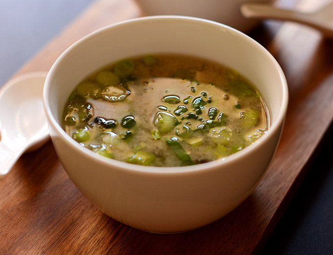

Miso Soup

Description
Miso soup is a traditional Japanese soup made primarily of miso paste, dashi (broth), and additional ingredients such as vegetables, seaweed, and tofu.
Ingredients
- 4 cups of vegetable broth (use dashi for more traditional miso soup)
- 1 sheet nori (dried seaweed)
- 3-4 tablespoons white or yellow miso paste
- ½ cup chopped green chard or other sturdy green
- ½ cup chopped green onion
- ¼ cup firm tofu
Steps
- Place vegetable broth in a medium sauce pan and bring to a low simmer.
- In the meantime, place miso (starting with lesser end of range) into a small bowl, add a little hot water and whisk until smooth. This will ensure it doesn’t clump when added to the soup later. Set aside.
- To the broth add chard (or other greens of choice), green onion, and tofu (if using silken, add at the end of cooking) and cook for 5 minutes. Then add nori and stir. Remove from heat, add miso mixture, and stir to combine.
- Taste and add more miso or a pinch of sea salt if desired. Serve warm. Best when fresh.
Nutrition Facts
Per Serving (1 bowl): 170 calories; protein 13.6g; carbohydrates 22.3g; fat 5g; cholesterol 0mg; sodium 1817mg
Back to Homepage
Recipe credit: minimalistbaker
I made this webpage for purely educational purposes. I do not claim credit for any of the images or information presented here.